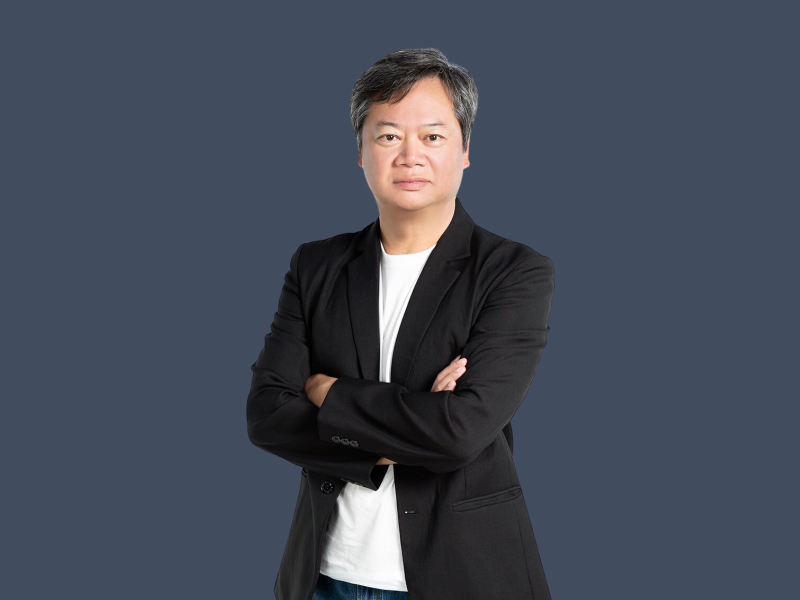

存股 · ETF · 財務自由
跟著不敗教主，
跟著不敗教主，
一起存股致富
30 年投資經驗，靠存股養成百萬股息、退休無憂。
陳重銘（不敗教主）——理性理財推廣先驅，擅長把「高股息 ETF」「資產配置」「股利再投資」等策略，轉化成每一個人都聽得懂、做得到的財富累積方法。
30 年投資經驗
暢銷書 10+ 本
萬人線上課程
理性 · 數據導向

關於教主
把複雜的理財，
變成你我都做得到的事。
30年
投資實戰經驗
10+本
暢銷理財著作
17年
高職教職經歷
萬人
線上課程學員
陳重銘（不敗教主），台灣科技大學機械碩士、高職教師出身，曾任教 17 年。他靠存股養成百萬股息，成為退休無憂的財務自由典範。
作為理性理財推廣先驅，他擅長將「高股息 ETF」「資產配置」「股利再投資」等策略，轉化為人人都懂的財富累積方法。
累積出版超過 10 本暢銷理財書，並跨界授課，曾與吳淡如聯手打造超過萬人參與的線上存股、ETF 實戰課程，廣受學員肯定。
代表著作
人人都讀得懂的存股書
從入門到進階，教主用最生活化的語言，帶你一步步建立屬於自己的財富系統。
《6年存到300張股票》
從零開始，用存股把資產養大
《打造小小巴菲特》
早一步教孩子認識複利的力量
《我的第一本理財存股書》
理財新手的第一堂存股課
另有《小資致富術》等 10+ 本暢銷理財著作，深入淺出，廣受好評。
教學專長
教主最擅長的四大領域
從存股到資產配置，一步步帶你走穩財富自由的每一步。
存股策略
用「股利再投資」與「長期持有」，讓資產像滾雪球一樣越滾越大。
ETF 組合配置
高股息 ETF 怎麼挑、怎麼配，打造穩定現金流的投資組合。
長期投資
用時間換空間，透過複利與耐心，跨越市場短期波動的噪音。
財富自由路徑設計
量身規劃屬於你的退休藍圖，一步步朝財務自由邁進。
教學風格
讓理財真正「落地」到生活
不講天書、不賣玄虛，教主的每一堂課，都從你的日常出發。
01
邏輯清晰
化繁為簡，把專業術語拆解成清楚的步驟，一步步跟著做就對了。
02
生活化舉例
用你我都熟悉的生活場景，解釋股利、複利與資產配置的運作。
03
數據導向
不憑感覺、不看明牌，用真實數據支撐每一次投資決策。
限時加入 · 現在就行動
立即加入 LINE，
立即加入 LINE，
開啟你的財務自由之路
跟教主一起，用最簡單的方式累積股息、養大資產，加入即免費領取〈存股實戰筆記〉。
立即加入 LINE 好友 免費領〈存股實戰筆記〉
免付費
新手友善
理性理財
常見問題
加入前你可能想了解
加入 LINE 能獲得什麼？＋
加入 LINE 好友後，可第一手掌握教主分享的存股觀念、ETF 配置方法與理財心法，用最生活化的方式學習長期投資。
我是理財新手，適合跟教主學嗎？＋
非常適合。教主曾任教 17 年，擅長把複雜的理財概念轉化成簡單易懂的語言，零基礎也能一步步上手。
存股真的能累積百萬股息嗎？＋
教主正是靠長期存股與股利再投資，累積出百萬股息、實現財務自由。關鍵在於正確的策略與長期紀律，而非短線投機。
加入 LINE 需要付費嗎？＋
加入 LINE 好友本身完全免費。相關課程與書籍資訊，皆可在 LINE 中進一步了解，依個人需求選擇。